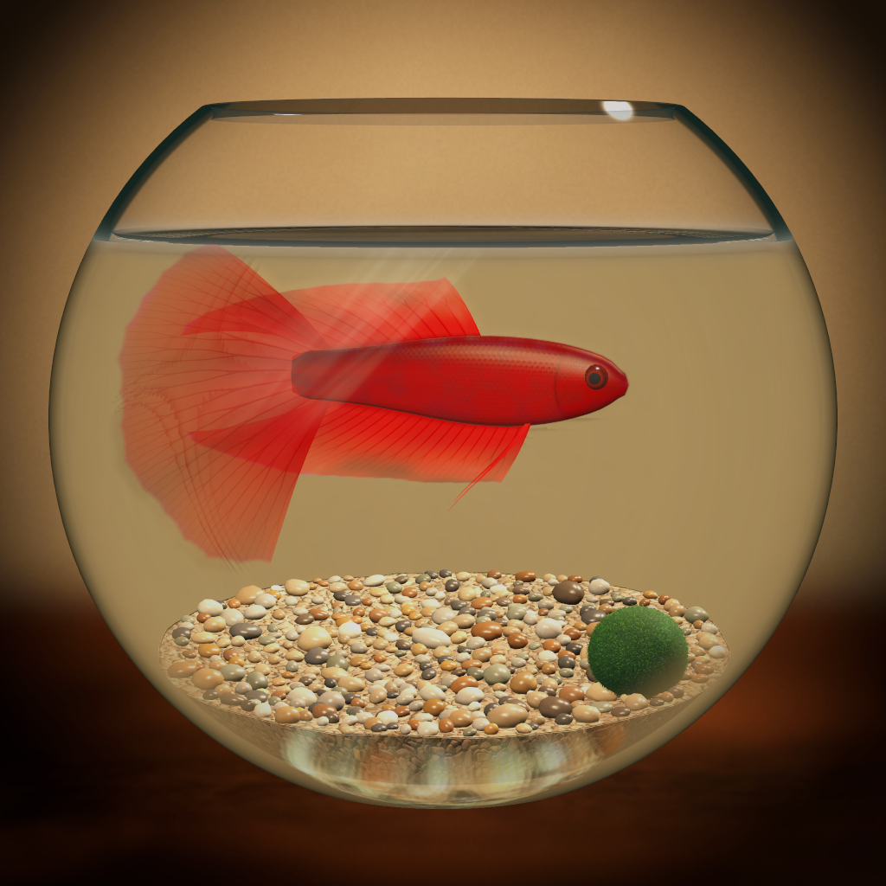

Dokunarak ilgilenCare with your touch
Camı sil, dibi sifonla, yemi dök. Su ve bakım sesleri küçük ritüeline eşlik etsin.Wipe the glass, siphon the gravel, pour the food. Let water and gentle care sounds accompany your little ritual.

AkvaryumSana ait bir 3D akvaryumA 3D aquarium of your own
Bir beta, küçük bir fanus ve sakin bir köşe. Besle, boya, düzenle; masandaki dünyanın büyümesini izle.One betta, a little fishbowl, and a quiet corner of your own. Feed, paint, decorate, and watch your world grow.
Türkçe ve İngilizce. İsteğe bağlı uygulama içi satın almalar içerir; temel bakım için satın alma gerekmez.Available in English and Turkish. Optional in-app purchases; basic care requires no purchase.
Küçük ritüeller, güzel anlarLittle rituals, lovely moments
Her ziyaretin uzun olmak zorunda değil. Bir yem saati, temiz bir cam ya da sadece birkaç dakika izlemek.Every visit can be a small one. A feeding moment, a clean pane of glass, or a few quiet minutes watching.
Camı sil, dibi sifonla, yemi dök. Su ve bakım sesleri küçük ritüeline eşlik etsin.Wipe the glass, siphon the gravel, pour the food. Let water and gentle care sounds accompany your little ritual.
Balıklarına isim ver. Gövde, yüzgeç ve kuyrukta kendi renk ve desenlerini tasarla.Name your fish. Create your own colours and patterns for their bodies, fins and tails.
Ödül ve görevlerle Pul kazan; yeni akvaryumlara, balıklara, bitkilere ve dekorlara doğru ilerle.Earn Pul through rewards and tasks, then work towards new aquariums, fish, plants and decorations.
Beta, lepistes, neon tetra ve daha fazlası: 17 türün ihtiyaçlarını ve davranışlarını keşfet.Bettas, guppies, neon tetras and more: discover the needs and behaviours of 17 species.
Uygun koşullarda üreyen türlerin yavrularını karşıla; büyümelerine tanık ol.Welcome fry from species that can breed when conditions are right, and follow their growth.
Telefonunu yatay çevir. Sevdiğin anı fotoğrafla, gelişim anılarını albümünde takip et.Turn your phone sideways. Photograph your favourite moments and revisit growth memories in your album.
Oynanış, kayıtlar veya satın almalarla ilgili yanıtları destek sayfasında bulabilirsin.Find answers about playing, local saves and purchases on the support page.